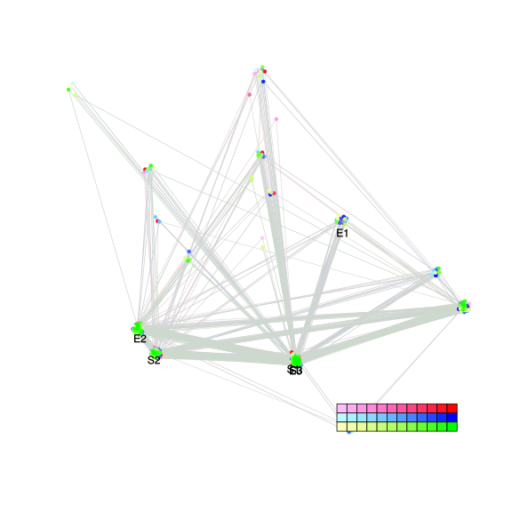
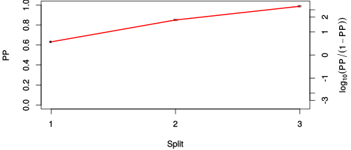
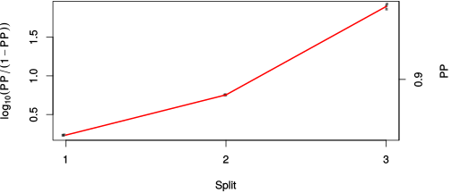

| chain # | burnin | subsample | Iterations (remaining) | command line | subdirectory | directory |
|---|---|---|---|---|---|---|
| 1 | 10000 | 1 | 90000 | bali-phy E7_AA_red3_BetaGamma.fas -s 54863 -n BetaGamma_c1 | BetaGamma_c1-1 | /DATA/work/ONCOGENEVOL/database/trees/Bali-Phy/red3/E7 |
| 2 | 10000 | 1 | 90000 | bali-phy E7_AA_red3_BetaGamma.fas -s 54458 -n BetaGamma_c2 | BetaGamma_c2-1 | /DATA/work/ONCOGENEVOL/database/trees/Bali-Phy/red3/E7 |
| 3 | 10000 | 1 | 90000 | bali-phy E7_AA_red3_BetaGamma.fas -s 69434 -n BetaGamma_c3 | BetaGamma_c3-1 | /DATA/work/ONCOGENEVOL/database/trees/Bali-Phy/red3/E7 |
| P(data|M) = -1316.325 +- 0.141 | Complete sample: 74 topologies | 95% Bayesian credible interval: 9 topologies |
Phylogeny Distribution

| Partition support: Summary |
| Partition support graph: SVG |
{kind=link}
| 50% consensus | Newick (+PP) | SVG | |||||
| 66% consensus | Newick (+PP) | SVG | |||||
| 80% consensus | Newick (+PP) | SVG | |||||
| 90% consensus | Newick (+PP) | SVG | |||||
| 95% consensus | Newick (+PP) | SVG | |||||
| 99% consensus | Newick (+PP) | SVG | |||||
| 100% consensus | Newick (+PP) | SVG | |||||
| MAP | Newick (+PP) | SVG | |||||
| greedy | Newick (+PP) | SVG |
{kind=link}
{kind=link}
{kind=link}
{kind=link}
{kind=link}
{kind=link}
{kind=link}
{kind=link}
Alignment Distribution
Partition 1
| Diff | Min. %identity | # Sites | Constant | Informative | ||||
|---|---|---|---|---|---|---|---|---|
| Initial | FASTA | HTML | Diff | 6% | 103 | 1 (0.971%) | 25 (24.3%) | |
| Best (WPD) | FASTA | HTML | AU | 18.7% | 126 | 12 (9.52%) | 36 (28.6%) |
Mixing
{kind=link}
{kind=link}
| burnin (scalar) | ESS (scalar) | ESS (partition) | ASDSF | MSDSF | PSRF-CI80% | PSRF-RCF |
|---|---|---|---|---|---|---|
| 967 | 3766 | 26992.724 | 0.001 | 0.003 | 1.001 | 1.011 |
Projection of RF distances for the first 3 chains3D | Variation of split PPs across chains |
Scalar variables
| Statistic | Median | 95% BCI | ACT | ESS | burnin | PSRF-CI80% | PSRF-RCF |
|---|---|---|---|---|---|---|---|
| prior | -145.7 | (-179, -120.2) | 27.41 | 9850 | 291 | 1 | 0.999 |
| prior_A1 | -125.4 | (-156, -102.9) | 15.38 | 17551 | 189 | 0.9998 | 0.9969 |
| likelihood | -1302 | (-1318, -1285) | 12.37 | 21827 | 175 | 0.9999 | 0.9991 |
| logp | -1448 | (-1476, -1425) | 28.41 | 9503 | 291 | 1 | 1.001 |
| Heat.beta | 1 | ||||||
| Scale1 | 3.29 | (1.353, 6.389) | 1.053 | 256520 | 77 | 0.9998 | 0.9998 |
| S1.F.pi.A | 0.0519 | (0.03165, 0.07473) | 7.56 | 35714 | 501 | 1 | 1.011 |
| S1.F.pi.R | 0.07259 | (0.04641, 0.102) | 8.511 | 31722 | 505 | 1 | 1.003 |
| S1.F.pi.N | 0.03324 | (0.01722, 0.05198) | 14.56 | 18542 | 719 | 0.9998 | 0.993 |
| S1.F.pi.D | 0.05059 | (0.03023, 0.07347) | 8.412 | 32096 | 666 | 0.9998 | 0.9971 |
| S1.F.pi.C | 0.04358 | (0.0214, 0.06956) | 8.189 | 32973 | 502 | 0.9998 | 1.001 |
| S1.F.pi.Q | 0.06397 | (0.04238, 0.0874) | 8.475 | 31857 | 405 | 1 | 1.004 |
| S1.F.pi.E | 0.094 | (0.06561, 0.125) | 8.506 | 31741 | 424 | 1 | 0.9954 |
| S1.F.pi.G | 0.06775 | (0.04016, 0.0985) | 8.282 | 32600 | 495 | 0.9997 | 1.001 |
| S1.F.pi.H | 0.01879 | (0.006757, 0.0341) | 9.081 | 29733 | 278 | 0.9993 | 1.011 |
| S1.F.pi.I | 0.0556 | (0.03496, 0.07976) | 7.943 | 33994 | 319 | 0.9999 | 1.005 |
| S1.F.pi.L | 0.07944 | (0.0519, 0.1104) | 7.79 | 34658 | 249 | 1 | 0.9967 |
| S1.F.pi.K | 0.02975 | (0.01512, 0.04731) | 7.844 | 34423 | 260 | 0.9992 | 1.008 |
| S1.F.pi.M | 0.00712 | (0.001338, 0.01547) | 8.819 | 30615 | 902 | 0.9997 | 1.002 |
| S1.F.pi.F | 0.03746 | (0.01926, 0.0589) | 7.972 | 33868 | 478 | 0.9998 | 0.9969 |
| S1.F.pi.P | 0.06157 | (0.03626, 0.09023) | 8.104 | 33316 | 381 | 1 | 1.003 |
| S1.F.pi.S | 0.06818 | (0.04531, 0.09371) | 8.018 | 33673 | 553 | 1 | 0.9966 |
| S1.F.pi.T | 0.04478 | (0.02584, 0.0661) | 8.114 | 33275 | 368 | 1 | 1.004 |
| S1.F.pi.W | 0.002429 | (2.337e-08, 0.01045) | 13.25 | 20374 | 458 | 0.9999 | 1.004 |
| S1.F.pi.Y | 0.03204 | (0.01447, 0.05371) | 8.194 | 32951 | 560 | 1 | 0.9959 |
| S1.F.pi.V | 0.06926 | (0.04731, 0.0934) | 7.929 | 34054 | 240 | 1.001 | 1.003 |
| I1.RS07.meanIndelLengthMinus1 | 1.47 | (0.5647, 2.839) | 4.465 | 60477 | 114 | 0.9999 | 1.001 |
| I1.RS07.logLambda | -3.794 | (-4.321, -3.217) | 5.418 | 49835 | 102 | 0.9999 | 0.9973 |
| |A1| | 123 | (117, 129) | 71.69 | 3766 | 967 | 0.8571 | 1.001 |
| #indels1 | 18 | (14, 24) | 14.31 | 18871 | 177 | 0.8571 | 0.9958 |
| |indels1| | 42 | (36, 54) | 12.77 | 21150 | 185 | 0.9231 | 0.9985 |
| #substs1 | 228 | (219, 235) | 35.91 | 7519 | 230 | 0.9091 | 0.9978 |
| Scale1*|T| | 4.003 | (3.356, 4.694) | 4.622 | 58412 | 130 | 0.9997 | 0.9996 |
| |A| | 123 | (117, 129) | 71.69 | 3766 | 967 | 0.8571 | 1.001 |
| #indels | 18 | (14, 24) | 14.31 | 18871 | 177 | 0.8571 | 0.9958 |
| |indels| | 42 | (36, 54) | 12.77 | 21150 | 185 | 0.9231 | 0.9985 |
| #substs | 228 | (219, 235) | 35.91 | 7519 | 230 | 0.9091 | 0.9978 |
| |T| | 1.219 | (0.4737, 2.222) | 1 | 270003 | 77 | 0.9999 | 1 |